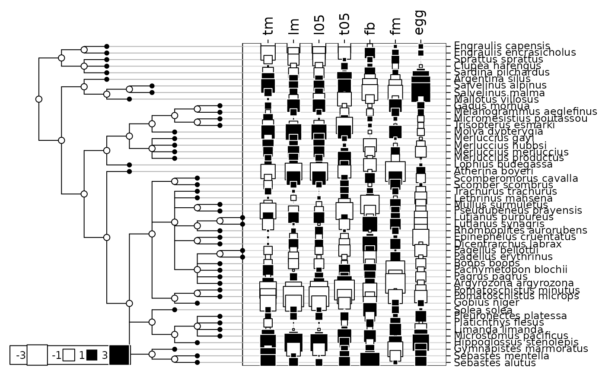
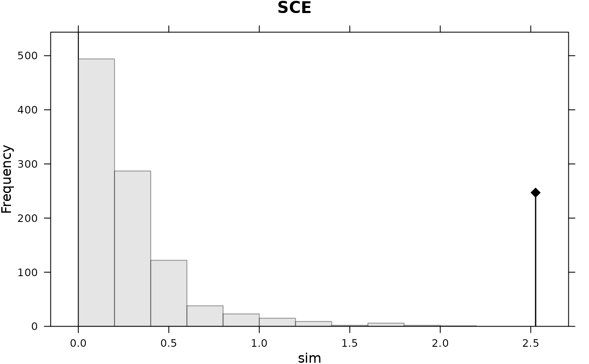

Phylogeny and quantitative traits of teleos fishes
mjrochet.RdThis data set describes the phylogeny of 49 teleos fishes as reported by Rochet et al. (2000). It also gives life-history traits corresponding to these 49 species.
Usage
data(mjrochet)Format
mjrochet is a list containing the 2 following objects :
- tre
is a character string giving the phylogenetic tree in Newick format.
- tab
is a data frame with 49 rows and 7 traits.
Details
Variables of mjrochet$tab are the following ones : tm (age at maturity (years)),
lm (length at maturity (cm)), l05 (length at 5 per cent survival (cm)),
t05 (time to 5 per cent survival (years)), fb (slope of the log-log fecundity-length relationship),
fm (fecundity the year of maturity), egg (volume of eggs (\(mm^{3}\))).
Source
Data taken from:
Summary of data - Clupeiformes : http://www.ifremer.fr/maerha/clupe.html
Summary of data - Argentiniformes : http://www.ifremer.fr/maerha/argentin.html
Summary of data - Salmoniformes : http://www.ifremer.fr/maerha/salmon.html
Summary of data - Gadiformes : http://www.ifremer.fr/maerha/gadi.html
Summary of data - Lophiiformes : http://www.ifremer.fr/maerha/loph.html
Summary of data - Atheriniformes : http://www.ifremer.fr/maerha/ather.html
Summary of data - Perciformes : http://www.ifremer.fr/maerha/perci.html
Summary of data - Pleuronectiformes : http://www.ifremer.fr/maerha/pleuro.html
Summary of data - Scorpaeniformes : http://www.ifremer.fr/maerha/scorpa.html
Phylogenetic tree : http://www.ifremer.fr/maerha/life_history.html
References
Rochet, M. J., Cornillon, P-A., Sabatier, R. and Pontier, D. (2000) Comparative analysis of phylogenic and fishing effects in life history patterns of teleos fishes. Oïkos, 91, 255--270.
Examples
data(mjrochet)
mjrochet.phy <- newick2phylog(mjrochet$tre)
tab <- log((mjrochet$tab))
tab0 <- data.frame(scalewt(tab))
table.phylog(tab0, mjrochet.phy, csi = 2, clabel.r = 0.75)

if (requireNamespace("adephylo", quietly = TRUE)) {
adephylo::orthogram(tab0[,1], ortho = mjrochet.phy$Bscores)
}

#> class: krandtest lightkrandtest
#> Monte-Carlo tests
#> Call: adephylo::orthogram(x = tab0[, 1], orthobas = mjrochet.phy$Bscores)
#>
#> Number of tests: 4
#>
#> Adjustment method for multiple comparisons: none
#> Permutation number: 999
#> Test Obs Std.Obs Alter Pvalue
#> 1 R2Max 0.1501481 1.039508 greater 0.128
#> 2 SkR2k 14.7098590 -3.723727 greater 1.000
#> 3 Dmax 0.3519553 4.076491 greater 0.002
#> 4 SCE 2.5268895 9.118328 greater 0.001
#>